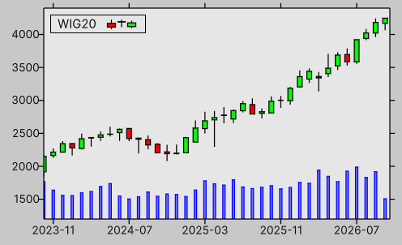

WIG20 demo
This example demonstrates how to plot candles using PlotWithCandles for the WIG20 Index.
The dataset was obtained from https://stooq.com/ in the following csv format
Date,Open,High,Low,Close,Volume
1991-04-30,100,100,93.5,93.5,13392
1991-05-31,92.9,95.5,92.9,94.6,64490
1991-06-30,95.8,95.8,84.1,84.1,97403
...

CultureInfo.CurrentCulture = CultureInfo.InvariantCulture;
var rows = csv.text
.Split('\n')
.Skip(1) // skip header
.Where(line => !string.IsNullOrWhiteSpace(line))
.Select(line =>
{
var v = line.Split(',');
return new
{
Date = v[0],
Open = float.Parse(v[1]),
High = float.Parse(v[2]),
Low = float.Parse(v[3]),
Close = float.Parse(v[4]),
Volume = float.Parse(v[5]),
};
})
.ToArray()
;
var candles = rows
.Select((v, i) => new Candle(x: i, open: v.Open, low: v.Low, high: v.High, v.Close))
.ToArray()
;
var date = rows
.Select((v, i) => (Tic)(i, v.Date[..^3]))
.Where((_, i) => (i + 1) % 8 == 0)
.ToArray()
;
var volumes = rows
.Select((v, i) => math.float2(i, v.Volume / 1e6f + 1200))
.ToArray()
;
var graph = new Graph
{
XAxis = { Min = 390, Tics = Tics.Manual(date) },
YAxis = { Min = 1200, Max = 4400 },
Canvas = { style = { backgroundColor = Color.gray9 } },
Key = { style = { backgroundColor = Color.gray9 } },
Theme = {
Key = { Position = KeyPosition.InTopLeft },
Grid = { Display = DisplayStyle.None },
Tics = { Direction = TicsDirection.Out }
},
style = { height = 250 }
};
graph.PlotWithCandles(candles, width: 0.5f, title: "WIG20", theme: new()
{
LineColor = Color.black,
FillColorUp = Color.green,
FillColorDown = Color.red,
});
graph.PlotWithBars(volumes, width: 0.25f).SetStyle(3);